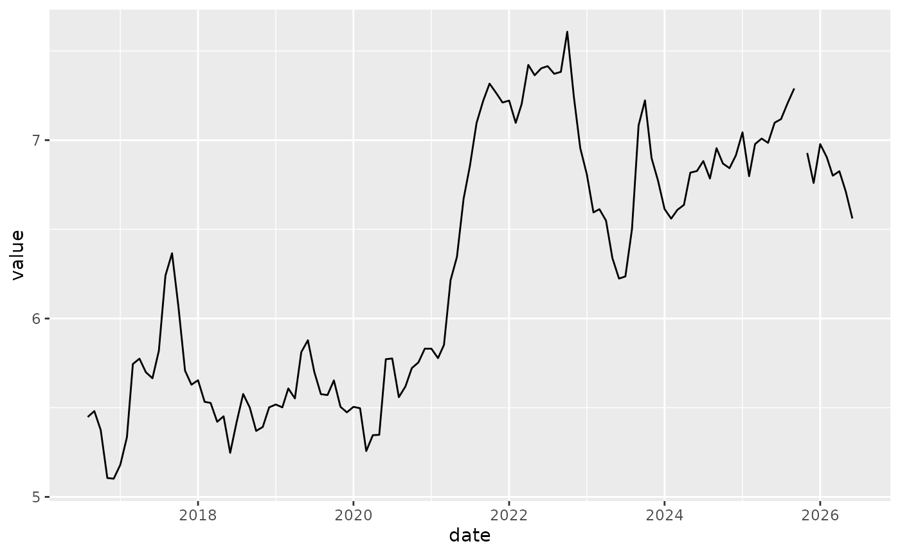

The BLT package provides helper functions to work with time series data on bacon, lettuce, and tomatoes.
One function is AR1(),
AR1(bacon$value)
#> Series: x
#> ARIMA(1,0,0) with non-zero mean
#>
#> Coefficients:
#> ar1 mean
#> 0.9720 6.1917
#> s.e. 0.0185 0.4317
#>
#> sigma^2 = 0.02769: log likelihood = 43.42
#> AIC=-80.83 AICc=-80.62 BIC=-72.49
AR1(lettuce$value)
#> Series: x
#> ARIMA(1,0,0) with non-zero mean
#>
#> Coefficients:
#> ar1 mean
#> 0.9556 1.4069
#> s.e. 0.0290 0.1921
#>
#> sigma^2 = 0.01136: log likelihood = 61.55
#> AIC=-117.09 AICc=-116.88 BIC=-108.76We also might want to know the percentage of NAs in our time series,
bacon |>
perc_missing_tidy(value)
#> [1] "0.84%"
lettuce |>
perc_missing_tidy(value)
#> [1] "34.5%"
tomatoes |>
perc_missing_tidy(value)
#> [1] "2.52%"So, lettuce has the greatest percentage of missing data.
